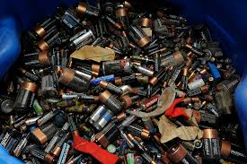

En la era digital actual, el consumo masivo de dispositivos electrónicos ha generado una creciente preocupación por la gestión adecuada de los residuos que estos generan al final de su vida útil. El reciclaje electrónico, también conocido como reciclaje de residuos de aparatos eléctricos y electrónicos (RAEE), se presenta como una solución clave para mitigar los impactos ambientales y aprovechar los recursos valiosos contenidos en estos dispositivos.
El reciclaje electrónico consiste en la recolección, desmantelamiento y procesamiento de dispositivos electrónicos desechados para recuperar materiales reutilizables y gestionar adecuadamente los componentes peligrosos. Este proceso permite la reincorporación de materiales valiosos a la cadena de producción, reduciendo la necesidad de extraer recursos naturales y minimizando la contaminación ambiental.

Los dispositivos electrónicos contienen metales preciosos como oro, plata, cobre y paladio. Por ejemplo, se estima que una tonelada de teléfonos inteligentes puede contener hasta 100 veces más oro que una tonelada de mineral de oro extraído de la tierra. El reciclaje de estos dispositivos permite recuperar estos metales, reduciendo la necesidad de minería y conservando los recursos naturales.
Los RAEE contienen sustancias tóxicas como plomo, mercurio y cadmio, que pueden filtrarse al suelo y al agua si no se gestionan adecuadamente. El reciclaje electrónico previene la liberación de estos contaminantes, protegiendo los ecosistemas y la salud humana.
La producción de metales a partir de materias primas vírgenes es intensiva en energía y genera altas emisiones de CO₂. En contraste, el reciclaje de metales a partir de RAEE consume significativamente menos energía y reduce las emisiones de gases de efecto invernadero.
El reciclaje electrónico es un componente esencial de la economía circular, que busca mantener los productos y materiales en uso durante el mayor tiempo posible. Al recuperar y reutilizar materiales de los RAEE, se promueve un modelo económico más sostenible y eficiente.
El reciclaje de RAEE implica varias etapas:

Científicos de la Escuela Politécnica Federal de Zúrich han desarrollado un método ecológico para extraer oro de residuos electrónicos utilizando subproductos de la elaboración del queso, como el suero de leche. Este proceso evita el uso de productos químicos tóxicos y permite recuperar oro de alta pureza de manera eficiente.
Investigadores de la Universidad Técnica de Viena han creado un método innovador para reciclar baterías usadas, convirtiendo sus componentes en catalizadores que transforman dióxido de carbono en metano, un combustible limpio. Este enfoque no solo reduce los residuos peligrosos, sino que también ofrece una fuente alternativa de energía sostenible.
Empresas como Apple han implementado robots especializados, como Daisy, capaces de desmontar dispositivos electrónicos y recuperar materiales valiosos con alta precisión. La automatización mejora la eficiencia del reciclaje y reduce los riesgos laborales asociados al desmantelamiento manual.
Hay diferentes desafios que tiene el reciclaje electronico por ejemplo que hay una baja tasa de reciclaje, a nivel mundial, solo el 20%de los residuos electrónicos se reciclan formalmente, lo que significa que una gran cantidad de materiales valiosos se pierden y los contaminantes se liberan al medio ambiente. Otra seria la falta de infraestructura y Legislación ya que en muchos paises la infraestructura para el reciclaje es nula y las leyes que regulan su gestion son inexistentes. Tambien una gran parte de los RAEE se exportan ilegalmente a paises en desarrollo por lo que se gestionan de manera informal y peligrosa, esto hace que haya riesgos para la salud en comunidades locales.
Para mejorar el reciclaje electrónico, se deben adoptar medidas como:
El reciclaje electrónico es una herramienta esencial para promover la sostenibilidad ambiental, conservar recursos naturales y proteger la salud pública. A través de la implementación de tecnologías innovadoras, políticas efectivas y la participación activa de la sociedad, es posible transformar los residuos electrónicos en una fuente valiosa de materiales y energía, contribuyendo así a un futuro más limpio y sostenible.